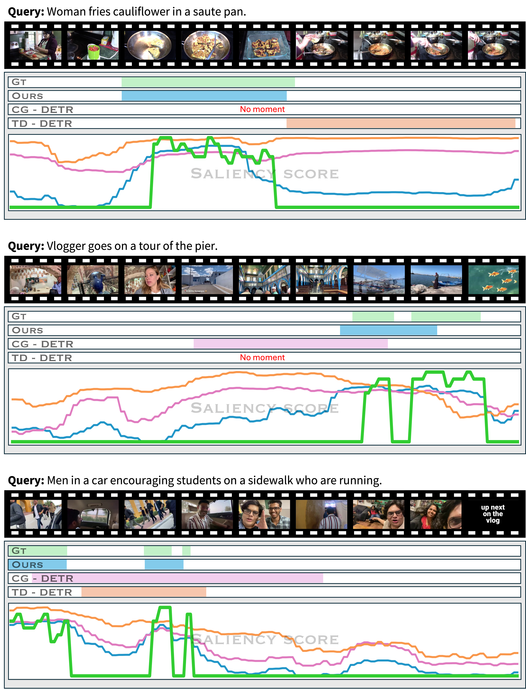
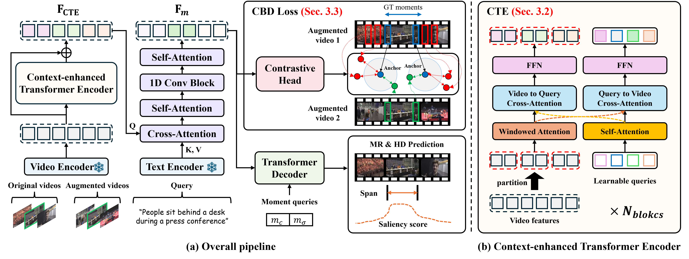
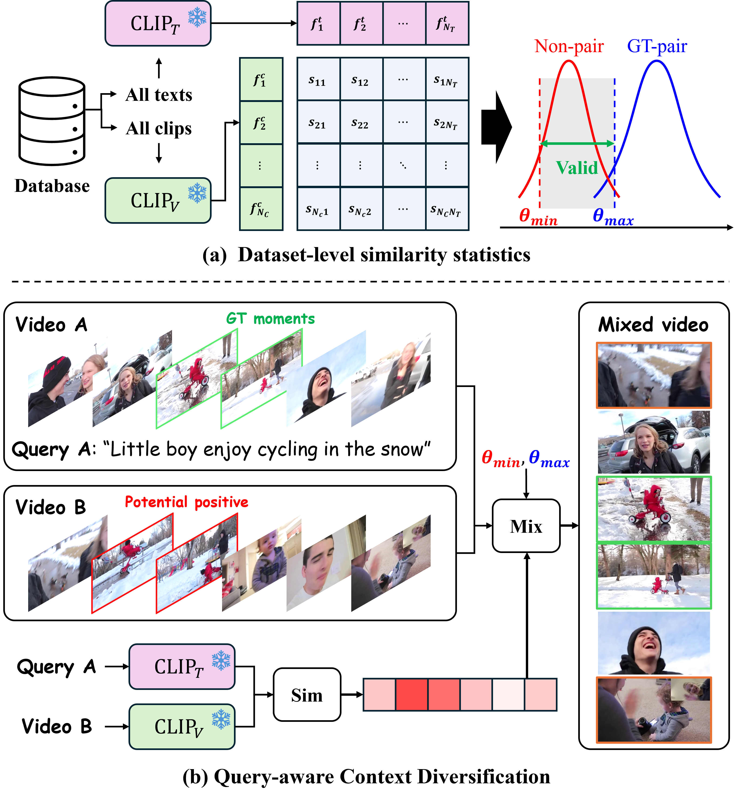

CVPR 2026

Qualitative visualization: Our method accurately localizes target moments by preventing false negatives, while baseline models struggle with semantic confusion caused by background context.
We propose Context-aware Video-text Alignment (CVA), a novel framework to address a significant challenge in video temporal grounding: achieving temporally sensitive video-text alignment that remains robust to irrelevant background context. Our framework is built on three key components. First, we propose Query-aware Context Diversification (QCD), a new data augmentation strategy that ensures only semantically unrelated content is mixed in. It builds a video-text similarity-based pool of replacement clips to simulate diverse contexts while preventing the "false negative" caused by query-agnostic mixing. Second, we introduce the Context-invariant Boundary Discrimination (CBD) loss, a contrastive loss that enforces semantic consistency at challenging temporal boundaries, making their representations robust to contextual shifts and hard negatives. Third, we introduce the Context-enhanced Transformer Encoder (CTE), a hierarchical architecture that combines windowed self-attention and bidirectional cross-attention with learnable queries to capture multi-scale temporal context.
Through the synergy of these data-centric and architectural enhancements, CVA achieves state-of-the-art performance on major VTG benchmarks, including QVHighlights and Charades-STA. Notably, our method achieves a significant improvement of approximately 5 points in Recall@1 (R1) scores over state-of-the-art methods, highlighting its effectiveness in mitigating false negatives.
The field of Video Temporal Grounding (VTG) aims to localize video segments that correspond to text queries. Despite advances, models tend to learn spurious correlations, overly associating text queries with static backgrounds rather than the target temporal dynamics. Recent work introduced content mixing augmentation that replaces background clips with content from other videos. However, this mixing remains query-agnostic — the replacement clips are sampled without regard for their semantic relevance to the text query. This can generate false negatives when semantically related clips are mistakenly treated as negative examples.

Overview of our CVA framework, which integrates Query-aware Context Diversification (QCD), Context-enhanced Transformer Encoder (CTE), and Context-invariant Boundary Discrimination (CBD).
Given a video and its text query, QCD simulates diverse temporal contexts by replacing background regions with clips from another video. Critically, we build a query-aware candidate pool using pre-computed CLIP-based video-text similarity. Only clips whose similarity falls within a valid range [θmin, θmax] are used for replacement — excluding both too-similar clips (false negative risk) and too-different clips (trivial negatives). We also preserve the immediate temporal context surrounding the ground-truth moment.

Illustration of our Query-aware Context Diversification (QCD).
Most existing models perform immediate cross-attention between video and text without adequately modeling the video's internal temporal context. CTE addresses this with a hierarchical encoder consisting of Nb stacked blocks, each containing:
After all blocks, hierarchical features are aggregated via a learnable weighted sum, producing context-enhanced features FCTE that are then fed into the multimodal encoder for cross-modal alignment with text queries.
QCD generates augmented videos where temporal context is altered while the target moment's semantics remain unchanged. CBD enforces this invariance by focusing on the temporal boundaries — the regions most critical for precise localization.
For each boundary index, we construct:
The contrastive loss pulls anchor–positive pairs together while pushing anchors away from hard negatives, guiding the model to learn highly discriminative, context-invariant boundary representations.
CVA outperforms all competing approaches, achieving substantial improvements across all metrics. The improvements are most pronounced in Moment Retrieval recall, highlighting the effectiveness of QCD in mitigating false negatives.
| Method | R1@0.5 | R1@0.7 | mAP@0.5 | mAP@0.75 | mAP Avg. | HD mAP | HIT@1 |
|---|---|---|---|---|---|---|---|
| Moment-DETR [NeurIPS'21] | 52.89 | 33.02 | 54.82 | 29.40 | 30.73 | 35.69 | 55.60 |
| UMT [CVPR'22] | 56.23 | 41.18 | 53.83 | 37.01 | 36.12 | 38.18 | 59.99 |
| QD-DETR [CVPR'23] | 62.40 | 44.98 | 62.52 | 39.88 | 39.86 | 38.94 | 62.40 |
| EaTR [ICCV'23] | 61.36 | 45.79 | 61.86 | 41.91 | 41.74 | 37.15 | 58.65 |
| CG-DETR [arXiv'23] | 65.43 | 48.38 | 64.51 | 42.77 | 42.86 | 40.33 | 66.21 |
| BAM-DETR [ECCV'24] | 62.71 | 48.64 | 64.57 | 46.33 | 45.36 | – | – |
| UVCOM [CVPR'24] | 63.55 | 47.47 | 63.37 | 42.67 | 43.18 | 39.74 | 64.20 |
| TR-DETR [AAAI'24] | 64.66 | 48.96 | 63.98 | 43.73 | 42.62 | 39.91 | 63.42 |
| CDTR [AAAI'25] | 65.79 | 49.60 | 66.44 | 45.96 | 44.37 | – | – |
| TD-DETR [ICCV'25] | 64.53 | 50.37 | 66.21 | 47.32 | 46.69 | – | – |
| CVA (Ours) | 70.05 | 55.32 | 69.49 | 48.45 | 47.49 | 44.43 | 66.01 |
CVA achieves the new state-of-the-art across all metrics, outperforming BAM-DETR by +2.66 on R1@0.5 and +1.40 on R1@0.7.
| Method | R1@0.3 | R1@0.5 | R1@0.7 | mIoU |
|---|---|---|---|---|
| M-DETR [NeurIPS'21] | 65.83 | 52.07 | 30.59 | 45.54 |
| UniVTG [ICCV'23] | 70.81 | 58.01 | 35.65 | 50.10 |
| UVCOM [CVPR'24] | – | 59.25 | 36.64 | – |
| BAM-DETR [ECCV'24] | 72.93 | 59.95 | 39.38 | 52.33 |
| CDTR [AAAI'25] | 71.16 | 60.39 | 37.24 | 50.65 |
| CVA (Ours) | 74.19 | 62.61 | 40.78 | 53.35 |
Our method consistently outperforms previous approaches on TACoS, achieving a mIoU of 41.07 (+1.76 over BAM-DETR).
| Method | R1@0.3 | R1@0.5 | R1@0.7 | mIoU |
|---|---|---|---|---|
| UniVTG [ICCV'23] | 51.44 | 34.97 | 17.35 | 33.60 |
| UVCOM [CVPR'24] | – | 36.39 | 23.32 | – |
| CDTR [AAAI'25] | 53.41 | 40.26 | 23.43 | 37.28 |
| BAM-DETR [ECCV'24] | 56.69 | 41.45 | 26.77 | 39.31 |
| CVA (Ours) | 58.80 | 43.21 | 27.73 | 41.07 |
We conduct ablation studies on the QVHighlights validation split to validate the contribution of each component. All three components are complementary, and their combination yields the best performance.
QCD vs. Query-agnostic Mixing: Query-agnostic mixing yields only marginal improvements, while QCD provides substantially larger gains (+5.21 R1@0.7 and +3.92 HD mAP), confirming that conditioning augmentation on the query is crucial for preventing false-negative contamination.
CBD Negative Sampling: Using only temporally adjacent negatives provides improvement, but the most significant gain comes from introducing semantically hard negatives. The final configuration (Nadj=2, Nhard=5) achieves the best overall performance including the highest HD mAP (43.47).
CTE Architecture: Learnable queries (+1.22 R1@0.5, +0.51 mAP@0.5) and windowed self-attention are complementary. Combining both mechanisms achieves the best overall balance (+2.30 R1@0.5, +1.89 mAP@0.5), demonstrating they jointly enhance temporal context encoding.
@inproceedings{moon2026cva,
title={CVA: Context-aware Video-text Alignment for Video Temporal Grounding},
author={Moon, Sungho and Lee, Seunghun and Seo, Jiwan and Im, Sunghoon},
booktitle={Proceedings of the IEEE/CVF Conference on Computer Vision and Pattern Recognition (CVPR)},
year={2026}
}